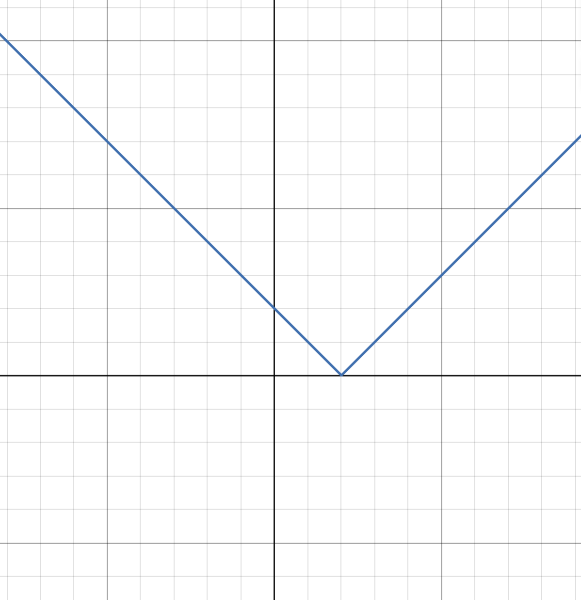

#3
The graph of is given. Match each equation with its
graph and give reasons for your choices.
(a) $y = f(x - 4)$ - Graph 3
Reason: Shift right 4 units (same shape, moved right)
(b) $y = f(x) + 3$ - Graph 1
Reason: Shift up 3 units (same shape, moved up)
(c) $y = (1/3)f(x)$ - Graph 4
Reason: Vertical compression by 1/3 (flatter graph)
(d) $y = -f(x + 4)$ - Graph 2
Reason: Shift left 4 units and reflect over x-axis
(e) $y = 2f(x + 6)$ - Graph 5
Reason: Shift left 6 units and stretch vertically by 2
#5
:)
#9
#13
#21

#28
In a normal respiratory cycle the volume of air that moves
into and out of the lungs is about 500 mL. The reserve and
residue volumes of air that remain in the lungs occupy
about 2000 mL and a single respiratory cycle for an average
human takes about 4 seconds. Find a model for the total
volume of air Vstd in the lungs as a function of time.
Base volume = $2000$ mL
Tidal volume = $500$ mL
Amplitude: $A=\frac{500}{2}=250$ mL
Midline: $2000+250=2250$ mL
Period: $T=4$ s, so $\omega=\frac{2\pi}{4}=\frac{\pi}{2}$ rad/s
Model (using cosine so that $V(0)=2000$):
$V(t)=2000+250\Bigl[1-\cos\Bigl(\frac{\pi}{2}t\Bigr)\Bigr]$
Final answer: $V(t)=2000+250\Bigl[1-\cos\Bigl(\frac{\pi}{2}t\Bigr)\Bigr]$
#35
$f(x)=\sqrt{x+1}$, $g(x)=4x-3$
(a) Compute $f\circ g(x)$:
$f(g(x))=\sqrt{(4x-3)+1}=\sqrt{4x-2}$
Domain: $4x-2\ge0 \Rightarrow x\ge\frac{1}{2}$
(b) Compute $g\circ f(x)$:
$g(f(x))=4\sqrt{x+1}-3$
Domain: $x+1\ge0 \Rightarrow x\ge-1$
(c) Compute $f\circ f(x)$:
$f(f(x))=\sqrt{\sqrt{x+1}+1}$
Domain: $x+1\ge0 \Rightarrow x\ge-1$
(d) Compute $g\circ g(x)$:
$g(g(x))=4(4x-3)-3=16x-15$
Domain: All real numbers, $x\in\mathbb{R}$
#36
$f(x)=\sin x$, $g(x)=x^2+1$
(a) $f\circ g(x)=\sin(x^2+1)$
Domain: $x\in\mathbb{R}$
(b) $g\circ f(x)=(\sin x)^2+1$
Domain: $x\in\mathbb{R}$
(c) $f\circ f(x)=\sin(\sin x)$
Domain: $x\in\mathbb{R}$
(d) $g\circ g(x)=(x^2+1)^2+1$
Domain: $x\in\mathbb{R}$
#41
1. $h(x)=x^3+2$
2. $g(h(x))=(x^3+2)^2$
3. $f(g(h(x)))=\sqrt{(x^3+2)^2-3}$
4. Final answer: $f\circ g\circ h(x)=\sqrt{(x^3+2)^2-3}$
#51
Express the function in the form f ∘ g ∘ h
$S(t)= \sin^2 (\cos t)$
$h(t)=\cos t$,
$g(u)=\sin u$,
$f(v)=v^2$.
Then, $f\circ g\circ h(t)= f(g(h(t)))= (\sin(\cos t))^2$.
#55
ripple travels at 60 cm/s, radius is: $r(t)=60t$.
area of a circle: $A(r)=\pi r^2$.
$(A\circ r)(t)=\pi (r(t))^2=\pi (60t)^2=3600\pi t^2$.
$(A\circ r)(t)$ represents the area of the circular ripple as a function of time.
#2 (a)
$8=2^3$.
$8^{4/3}=(2^3)^{4/3}=2^{3\cdot(4/3)}=2^4$.
$2^4=16$.
answer: $16$.
#2 (b)
Expand: $(3x^2)^3 = 3^3(x^2)^3$
$3^3 = 27$ and $(x^2)^3 = x^{2\cdot3} = x^6$
Multiply by $x$: $x\cdot27x^6 = 27x^{1+6} = 27x^7$
answer: $27x^7$
#4(a)
numerator: $x^{2n} \cdot x^{3n-1} = x^{2n+3n-1} = x^{5n-1}$
Divide by $x^{n+2}$: $\frac{x^{5n-1}}{x^{n+2}} = x^{(5n-1)-(n+2)} = x^{5n-1-n-2} = x^{4n-3}$
answer: $x^{4n-3}$
#4(b)
numerator:
$\sqrt{a\sqrt{b}}=\bigl(a\,b^{1/2}\bigr)^{1/2}=a^{1/2}b^{1/4}$
denominator:
$\sqrt[3]{ab}=(ab)^{1/3}=a^{1/3}b^{1/3}$
$\displaystyle \frac{a^{1/2}b^{1/4}}{a^{1/3}b^{1/3}}=a^{1/2-1/3}b^{1/4-1/3}$
Simplify
$a^{1/2-1/3}=a^{\frac{3-2}{6}}=a^{1/6}$ and $b^{1/4-1/3}=b^{\frac{3-4}{12}}=b^{-1/12}$
answer:
$a^{1/6}b^{-1/12}=\displaystyle \frac{a^{1/6}}{b^{1/12}}$
#7
How are
these graphs related?
y=e^x, y=e^-x, y=8^x, y=8^-x
All functions are exponential
All of the functions intersect at (0,1)
negative exponents are a reflections of their positive counterparts
#17
(a) $y = e^x - 2$
(b) $y = e^{x-2}$
(c) $y = -e^x$
(d) $y = e^{-x}$
(e) $y = -e^{-x}$
#19
Denom. must be nonzero: $1-e^{1-x^2}\neq0$
$e^{1-x^2}\neq1$ ⟹ $1-x^2\neq0$
$x^2\neq1$ ⟹ $x\neq1$ and $x\neq-1$
Domain: $(-\infty,-1)\cup(-1,1)\cup(1,\infty)$
#23
$f(x)=5^x$, so $f(x+h)=5^{x+h}=5^x\cdot5^h$
$f(x+h)-f(x)=5^x\cdot5^h-5^x=5^x(5^h-1)$
Divide by $h$: $\displaystyle \frac{f(x+h)-f(x)}{h}=\frac{5^x(5^h-1)}{h}=5^x\left(\frac{5^h-1}{h}\right)$
#31
(a) $A(15)=200\cdot\left(\frac{1}{2}\right)^{15/5}=200\cdot\left(\frac{1}{2}\right)^3=200\cdot\frac{1}{8}=25$ mg
(b) $A(t)=200\cdot\left(\frac{1}{2}\right)^{t/5}$
(c) 3 weeks = 21 days
$A(21)=200\cdot\left(\frac{1}{2}\right)^{21/5}\approx200\cdot\left(\frac{1}{2}\right)^{4.2}\approx11$ mg
(d)
#6
Yes this function is one-to-one
There is only y-value there is only one x-value
it also passes the horizontal line test.
#11
f(t) is not one-t-one
Because the football reaches the same height at two different times —
the function fails the horizontal line test.
#15(a)
Since $f(6)=17$, by the definition of the inverse function, we have $f^{-1}(17)=6$.
Since $f^{-1}(3)=2$, by the definition of an inverse function, $f(2)=3$.
#19
$C=\frac{5}{9}(F-32)$
$\frac{9}{5}$: $F-32=\frac{9}{5}C$
Add 32: $F=\frac{9}{5}C+32$
Inverse function: $f^{-1}(C)=\frac{9}{5}C+32$
Domain of $f^{-1}$: Since $F\ge-459.67$ corresponds to $C\ge-273.15$, the domain is $C\ge-273.15$
Given a Celsius temperature $C$, $f^{-1}(C)$ converts it to the corresponding Fahrenheit temperature.
#25
$y=\ln(x+3)$
$e^y=x+3$
Solve for $x$: $x=e^y-3$
Switch $x$ and $y$: $y=e^x-3$
answer: $f^{-1}(x)=e^x-3$
#34
(a) The natural logarithm is the logarithm with base $e$ (where $e \approx 2.71828$), denoted by $\ln(x)$.
(b) The common logarithm is the logarithm with base $10$, denoted by $\log(x)$ or $\log_{10}(x)$.
(c)
#35
Since $32=2^5$, we have:
$\log_2 32=5$.
#37
(a)
$\log_{10} 40 + \log_{10} 2.5 = \log_{10}(40\cdot2.5) = \log_{10}(100) = 2$
(b)
$\log_8 60 - \log_8 3 - \log_8 5 = \log_8\left(\frac{60}{3\cdot5}\right) = \log_8\left(\frac{60}{15}\right) = \log_8 4$
Since $8=2^3$ and $4=2^2$, we have
$\log_8 4 = \frac{\log_2 4}{\log_2 8} = \frac{2}{3}$.
answers: (a) $2$, (b) $\frac{2}{3}$.
#41
$\frac{1}{3}\ln(x+2)^3 = \ln\left[(x+2)^3\right]^{1/3} = \ln(x+2)$
bracket:
$\frac{1}{2}\Bigl[\ln x-\ln(x^2+3x+2)^2\Bigr] = \ln\left(\frac{x}{(x^2+3x+2)^2}\right)^{1/2} = \ln\sqrt{\frac{x}{(x^2+3x+2)^2}}$
Adding terms:
$\ln(x+2) + \ln\sqrt{\frac{x}{(x^2+3x+2)^2}} = \ln\Bigl[(x+2)\sqrt{\frac{x}{(x^2+3x+2)^2}}\Bigr]$
Factorizing: $x^2+3x+2 = (x+1)(x+2)$, so $(x^2+3x+2)^2 = (x+1)^2(x+2)^2$
$(x+2)\sqrt{\frac{x}{(x+1)^2(x+2)^2}} = \frac{\sqrt{x}}{x+1}$
answer: $\ln\left(\frac{\sqrt{x}}{x+1}\right)$
#52
(a) Solve: $\ln(x^2-1)=3$
$x^2-1=e^3$
Solve for $x^2$: $x^2=e^3+1$
Take square roots: $x=\pm\sqrt{e^3+1}$
(b) Solve: $e^{2x}-3e^x+2=0$
Let $u=e^x$, then $u^2-3u+2=0$
Factor: $(u-1)(u-2)=0$ so $u=1$ or $u=2$
$e^x=1 \Rightarrow x=0$, and $e^x=2 \Rightarrow x=\ln2$
answers: (a) $x=\pm\sqrt{e^3+1}$, (b) $x=0$ or $x=\ln2$.
#61
(a)
$n=100\cdot2^{t/3}$
Divide: $\displaystyle \frac{n}{100}=2^{t/3}$
Take $\log_2$: $\displaystyle \log_2\left(\frac{n}{100}\right)=\frac{t}{3}$
Mult by 3: $t=3\log_2\left(\frac{n}{100}\right)$
Inverse: $\displaystyle f^{-1}(n)=3\log_2\left(\frac{n}{100}\right)$
(This gives the time in hours for the population to reach $n$ bacteria.)
(b) $n=50000$:
$t=3\log_2\left(\frac{50000}{100}\right)=3\log_2(500)$
Approximately, $t\approx3\left(\frac{\ln500}{\ln2}\right)\approx3(8.97)\approx26.9$ hours.